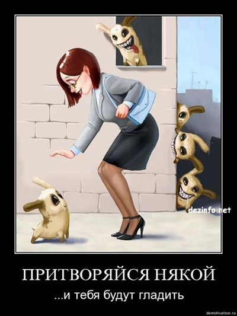

Авраам Болеслав Покой об истоках няшизма
Добавлю сюда еще один текст, очень хорошо раскрывает тему «няшных котегов».
***
Истинного Учителя Истины (то есть меня) в последние дни часто спрашивают о художественном фильме Якова Камерона «Аватар». Едва ли кому-то нужны мои стариковские «вау»: важнее то, что упомянутое произведение является очередным манифестом популярнейшей ереси нашего времени — няшизма.
Название этой тоталитарной идеологии дал, как обычно, цепной пес здравого смысла — проф. Инъязов. Он произвел его от популярного восклицания из японской мультипликации «Ня», обозначающего мяуканье. Суть няшизма проста: его последователи, биологически оставаясь людьми, мечтают стать социальными котами Человечества, которых кормят за мурлыканье и дают много фантиков для игр.
Няшисты развились из жестоко одомашненной около двухсот лет назад разновидности Homo. Подобно тому, как осевшее и накопившее излишки зерновых Человечество приручило полевых зверьков для присмотра за амбарами, при усложнении производственных процессов оно воспитало в своем коллективе особую породу, способную часами смирно сидеть на одном месте и следить за делами других. Как ни странно, общим предком современного нам разнообразия длинношерстных Девочек Из Бухгалтерии, пойнтовых секретарш Лен, лысых пиарщиков и дрессированных светских обозревательниц был замордованный делопроизводитель в нарукавниках и с аккуратным почерком, которого никто просто так не кормил и не развлекал.
Со временем кошки бросили ловить мышей, обнаружив, что достаточно мурлыкать и выгибать спинку. Сегодня няшисты, сняв нарукавники, пытаются совершить то же триумфальное нисхождение по эволюционной лестнице. Их не волнует уже ни карьера, ни тем более конечный смысл их ежедневного сидения на т.н. рабочих местах: они лишь жаджут свести к минимуму и то, и другое.
Отличие няшистов от собственно людей очевидно: люди образуют общество, няшисты же его терпят. Люди волнуются о происходящем в мироздании — няшисты им выборочно интересуются. Для людей существует добро и зло (для общечеловеков мораль необходима, собственная этика — это уже для сапиенсов — W.). Няшистская мораль имеет свою шкалу, отрицательной максимой которой выступает запара, а положительной — игра с фантиком после сытного обеда.
Няшизм провозглашает своей целью освобождение своих последователей от человеческой сущности — через превращение их в холощеных декоративных персонажей, которых этим волосатым двуногим почему-то приятно держать. При этом, подобно своему тотему, няшисты всячески демонстрируют независимость, гордо пишут в блогах о своей социофобии и время от времени мяукают у входной двери на тему, как бы резво они пустились в темный лес, когда б их выпустили на волю.
Заявить свою программу вслух они не могут — по все той же, вскрытой еще А. Пушкиным причине. Однако, научившись обманывать санитаров, они про себя по-прежнему лелеют мечту о хвостатом изяществе, о первобытном безвременьи и о том, чтобы белоглазое галстучное начальство их не трепыхало.
В этом смысле яркая картина Камерона является прямо-таки няшистским порно. Измученные трудовым заглядыванием друг к другу в фотоальбомы няшисты, придя в кинотеатр, наблюдают человекообразных голубых сфинксов в глубоком дауншифтинге с безлимиткой, накостылявших типичному начальству. И хотя в реальности такого не бывало и никогда не случится — они в экстазе.
…Няшизм опасен тем, что заражает людей диссидентской неприязнью к тому, что они делают — и, как следствие, поистине кошачьим равнодушием к тому, что творится за окном. Он исправно служит моральному опусканию Человечества — ибо общность, в которой все мечтают поменьше видеть все эти рожи, не может соорудить подлинно человеческого будущего.
Мир же победившей няшности еще более ста лет назад изобразил в повести «Машина времени» Герберт Уэльс. Как и любая халява, он у него оказывается с сюрпризом.